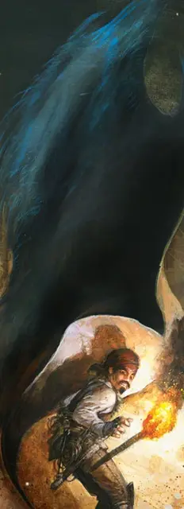

Траппер
Trapper
Большой Монстр, без мировоззрения

Класс Доспеха 13 (природный доспех)
Хиты 85 (10к10 + 30)
Скорость 10 футов, лазая 10 футов
| мод | спас | ||
|---|---|---|---|
| СИЛ | 17 | +3 | +3 |
| ЛОВ | 10 | +0 | +0 |
| ТЕЛ | 17 | +3 | +3 |
| мод | спас | ||
|---|---|---|---|
| ИНТ | 2 | −4 | −4 |
| МДР | 13 | +1 | +1 |
| ХАР | 4 | −3 | −3 |
Навыки Скрытность +2
Чувства слепое зрение 30 футов, тёмное зрение 60 футов, пассивное Восприятие 11
Опасность 3 (700 опыта)
Бонус мастерства +2
Среда обитания Подземье
Особенности
Ложная внешность. . Пока траппер прикреплен к потолку, полу или стене и не двигается, его почти невозможно отличить от обычной секции потолка, пола или стены. Существо, которое может его видеть и успешно прошедшее проверку Интеллекта (Расследование) или Интеллекта (Природа) Сл 20, может различить его присутствие.
Паучья ходьба. . Траппер может взбираться по сложным поверхностям, включая вверх ногами по потолку, без необходимости проходить проверки.
Действия
Удушение. . Одно Большое существо или меньше в 5 футах от траппера должно преуспеть в спасброске Ловкости Сл 14 или стать схваченным (Сл высвобождения 14). До конца захвата цель получает 17 (4к6 + 3) дробящего урона плюс 3 (1к6) урона кислотой в начале каждого из своих ходов. В таком захвате цель опутана, ослеплена и рискует задохнуться. Траппер может душить только одно существо одновременно.
Описание
Трапперы знают когда их добыча проходит мимо, так что следует исследовать руины и подземелья с особенной осторожностью. Для тупых зверей они слишком хорошо знают что такое сокровища, сундуки с сокровищами и как они привлекают таких как мы.
– Воло
Траппер – это скатоподобное существо, обитающее в природной среде и в подземельях. Он может менять цвет и текстуру своей крепкой внешней стороны, чтобы лучше сливаться с окрестностями, а его мягкая внутренняя сторона цепляется за пол, стены или потолки на территории его охоты. Он остается неподвижным и ждет пока добыча подходит ближе. Когда цель находится в пределах досягаемости, он отслаивается от поверхности и оборачивается вокруг добычи, ломает, душит, а после и поедает её.
Универсальный камуфляж. Траппер может изменить цвет и текстуру своей внешней стороны, чтобы она подходила под окружение. Он может смешаться с любой текстурой, сделанной из камня, земли или дерева, маскируя свое присутствие для всех кроме самых тщательных исследователей. Он не может изменить структуру на травяную или снежную поверхность, но может поменять свой цвет и укрыться под тонким слоем растений или настоящим снегом.
Неподвижные охотники. Тапперу нужно съедать пищи примерно с одного полурослика раз в неделю, чтобы оставаться сытым. Он обычно остается на одном и том же месте, при постоянном притоке пищи, поэтому трапперы могут стать угрозой в любом часто посещаемом подземелье и на популярных маршрутах в дикой местности. При недостатке добычи траппер входит в состояние спячки, которое может продолжаться месяцами, но даже в нем он чувствует, когда добыча оказывается неподалеку. Траппер на грани голодной смерти может отринуть свои инстинкты и уползти в другое место, покинув свою старую территорию в поисках лучшей охоты.
Бойтесь останков. Когда добыча убита, траппер растворяет и поглощает сочную плоть, оставляя кучу костей, металла, сокровищ и других не перевариваемых вещей на том месте, где было существо. Траппер, который скрывается на полу своих охотничьих угодий, может укрыть эти останки своим телом, чтобы они выглядели просто как неровная поверхность. Существо так же может прилепиться к стене или потолку вблизи от недавнего убийства, эффективно используя останки как приманку: существо, которое остановится и исследует кости на предмет ценностей имеет неплохие шансы стать следующим обедом траппера.